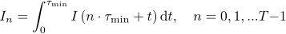
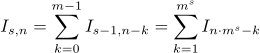
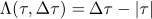
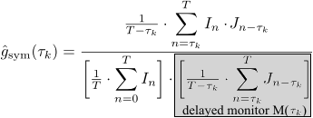
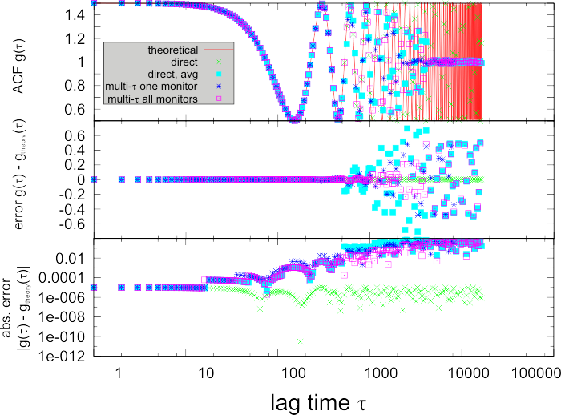
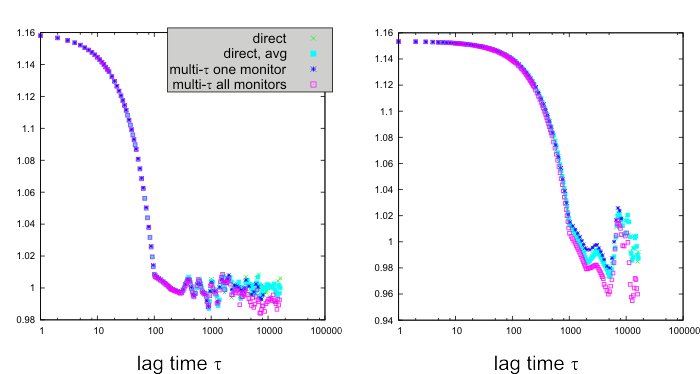

In the last section only the definition of the ACFs/CCFs was given (in terms of integrals, i.e. continuous imae series). But the image series I(t) (omitting the pixel-specifier) are not continuous, but discrete in time:
This section will describe the different types of correlators, available in this plugin, that calculate an ACF/CCF from one/two given discrete timeseries In (and Jn ). The integration or frame time is specified by τmin.
This correlator directly estimates the above given correlation function by replacing the integrals with sums (only the CCF of two signals In and Jn is shown, the ACF is given by the CCF of the signal with itself, i.e. Jn=In):
This sum is evaluated for semi-logarithmically spaced lags τ. These are specified by three integer numbers S, P and m that result in S·P different values of τ = τs,p:
τ0,0 = τminThis recursive formula leads to S blocks of P linearly spaces lags. The difference between two subsequent lags increases exponentially (ms) from block to block. The normalization is explained in more detail below.
τs,p = τs-1,P-1 + p·ms with s=0..S-1 and p=0..P-1
This correlator yields the same results as the Direct Estimation, but intrinsically averages the calculated correlation function (with a triangular kernel, see below). The width of the averaging increases from decade to decade of the quasi-logarithmically spaced τ-values at which the correlation function is evaluated. The correlation works like this:
This can be illustrated:

Normal/"integer" correlators: There are two varieties of this correlator implemented in QuickFit, the first one uses double-precision floating point numbers (64-bit IEEE floats) for calculating the sums and products in the correlations. This limits the range of representable numbers to about 15-16 decimal significant digits (correspond to 52 binary digits). The second version uses 64-bit unsigned integers (~19 decimal digits) for the products and sums. This increases the accuracy at high input-countrates, but at the cost of a rounding error when converting the floating point input value (including background and bleach corrections, which are non-integer) back to an integer number. So if you measured high count rates per pixel or use high non-averaging binning, this variant may be beneficial.
This correlation scheme was introduced by K. Schätzel $$ref:SCHAETZEL1985:K. Schätzel (1985): New concepts in correlator design, Institute of Physics Conference Series 77, 175-184.$$$$ref:SCHAETZEL1990:K. Schätzel (1990): Noise on photon correlation data: I. Autocorrelation functions, Quantum Opt. 2, 287-305$$ for hardware correlators. It allows to estimate the ACF/CCF without keeping the whole time series in memory. It is based on the above semi-logarithmically spaced values of τs,p. For each of the P linear blocks an averaged set of input signals is created:
Using this scheme, the estimate of the CCF can be written as above:
As can be seen only the averages intensities Is,n appear in the formula. This scheme can also be drawn as a schematic, which shows the direct connection to a simple hardware implementation $$ref:BUCHHOL2012:J. Buchholz, J.W. Krieger, etal (2011): FPGA implementation of a 32×32 autocorrelator array for analysis of fast image series, Optics Express, vol. 20, issue 16, p. 17767$$:
The Δτ blocks delay the input signal by Δτ, the ×-blocks multiply the two input signals and the Σ-blocks accumulate the input. The top row (a) shows a fully linear implementation (no logarithmic spacing) and (b)/(c) the multi-τ implementation. This plugin contains a software version of this scheme. Using this scheme introduces an additional (triangular) averaging into the ACF/CCF (as compared to the direct estimation), but allows to calculate it without the need to keep the whole image series in memory. Also this averaging depends on the linear block s and has only little impakt for small s. the systematic error introduced increases for the larger lags for which usually measured ACFs/CCFs already decayed to 0 $$ref:KOJIRO1999:Z. Kojro, A. Riede, M. Schubert and W. Grill (1999): Systematic and statistical errors in correlation estimators obtained from various digital correlators Review of Scientific Instruments 70, 4487-4496$$:
Here  is a triangular kernel function and * denotes the convolution product.
The "delayed monitor" M(τk) may be estimated in two ways. Either it is calculated for every lag τk separately, or it can bes estimated as:
from the zero-lag monitor M(0). This method possibly introduces additional errors that are but negligible for longer image series (see $$ref:BUCHHOL2012:$$ for a detailed discussion).
In general the results of all correlation scheme are the same. Those with intrinsic averaging will decrease the noise on the correlation curve at larger lag times, where the statistics tends to get worse due to the fewer summands in the average. This is beneficial, when the correlation curves decay to zero/one in this regime, as then the estimation error is decreased. If the correlation curves do not decay, using a correlator with averaging will introduce an additional systematic error. This can be illustrated in these examples:
autocorrelation of a sine signal:

autocorrelation which decays to one for different decay times:In addition to these discussed errors there are other differences in the implementations: The direct correlators need the whole image series to reside in memory, so if your image series is very long (longer than ~1,000,000 frames and with many pixels) it is usually better to use the multi-τ correlators, as these are fed frame by frame, so only few frames reside in memory at every time. $$qf_commondoc_backtop$$

the simplest way to estimate the error of a correlation function is to simply repeat the measurement $(K)$ times and then use the average and standard deviation over these $(K)$ repeats as curve and errorestimate for any further evaluation (e.g. for weighting a fit). The imFCS correlator can do such an average+SD, if you cut a measurement into $(K)$ segments.
The algorithm described above provides the correlation function, but not its error. The error can be calculated using a method called "blocking" $$ref:FLYVBJERG1989:Flyvbjerg H, Petersen H G (1989) Error estimates on averages of correlated data. The Journal of Chemical Physics 91: 461, doi: 10.1063/1.457480$$. Generally the correlation algorithm calculates a sum $[G_\tau=\frac{1}{N}\cdot\sum_{n=1}^N\underbrace{I_n\cdot J_{n+\tau}}{=x_n}]$ and the error of such a summation is simply given by: $[\sigma^2(G_\tau)=\langle G_\tau^2\rangle-\langle G_\tau\rangle^2.]$ The standard error is accordingly: $[\mbox{SE}(G_\tau)=\sqrt{\frac{\sigma^2(G_\tau)}{N-1}}.]$ This gives a good estimator of the variance only if the $(x_n=I_n\cdot J_{n+\tau})$ are a non-correlated random number. In FCS/FCCS we are interested in calculating $(G_\tau)$ for correlated signal $(I_n,J_n)$ and thus also for correlated $(x_n)$. This problem is solved by the mentiones "blocking" method due to Flyvbjerg & Petersen $$ref:FLYVBJERG1989:$$. Here one averages the summands: $[x_{n/2}'\leftarrow \frac{x_{2n}+x_{2n+1}}{2}]$ repeatedly, until the resulting $(x_n)$ are approximateky un-correlated. Only then the variance $(\sigma(G_n))$ is calculated from the averaged summands.
The authors of $$ref:GUO2012:Guo S, He J, Monnier N, Sun G, Wohland T, Bathe M (2012) Bayesian Approach to the Analysis of Fluorescence Correlation Spectroscopy Data II: Application to Simulated and In Vitro Data. Analytical Chemistry 84: 3880-3888 doi: 10.1021/ac2034375 $$$$ref:HE2012: He J, Guo S, Bathe M (2012) Bayesian Approach to the Analysis of Fluorescence Correlation Spectroscopy Data I: Theory. Analytical Chemistry 84: 3871-3879 doi: 10.1021/ac2034369$$$$ref:GUO2014: Guo S, Bag N, Mishra A, Wohland T, Bathe M (2014) Bayesian Total Internal Reflection Fluorescence Correlation Spectroscopy Reveals hIAPP-Induced Plasma Membrane Domain Organization in Live Cells. Biophysical Journal 106: 190-200 $$ presented a method that alows to automatically determine the level of blocking that is required to obtain statistically independent $(x_n)$. basically one tries different blocking levels for the first lag $(\tau=1)$ and for each blocking calculates $(\sigma^2(G_\tau))$ and it's standard error, which is (assuming a normal distribution of $(x_n)$: $$ref:FLYVBJERG1989:$$ $[\sigma\left(\mbox{SE}(G_\tau)\right)=\sqrt{\frac{\sigma^2(G_\tau)}{N-1}}\cdot\frac{1}{\sqrt{2(N-1)}}.]$ Then one selects the blocking level, for which three consecutive $(\mbox{SE}(G_\tau)\pm\sigma\left(\mbox{SE}(G_\tau)\right))$ have overlapping ewrror bars $$ref:GUO2014:$$. $$note:If the direct-averaging correlators are used, that average the data between linear blocks, the level of blocking before calculating the errors is reduced by the number of averages/blockings of the input data. This is just an approximation, because both procedures average different data, but should yield good results, as they both smooth the input data!$$
$$references$$